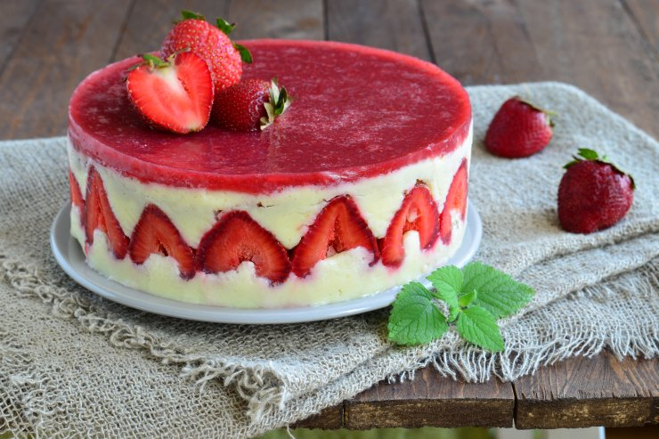
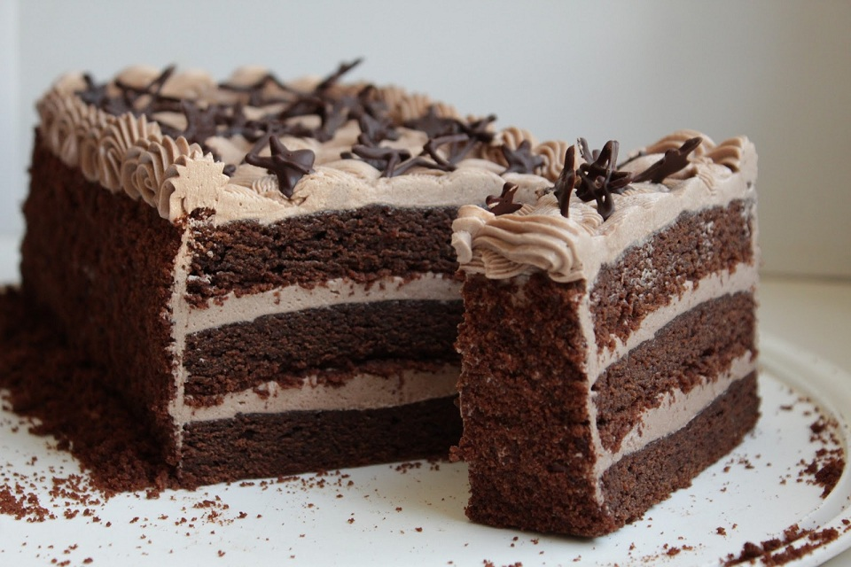

Десерти
-
Чізкейк з полуницею
Інгредієнти:
- Крем-сир - 450 г
- Цукор - 1/2 склянки
- Яйця - 3 шт.
- Ванільний екстракт - 1 ч. л.
- Полуниця - 1 склянка
- Хлібні крихти - 1 склянка
- Масло - 1/4 склянки
Приготування:
- Розігрійте духовку до 180 градусів.
- Змішайте разом хлібні крихти та розтоплене масло та притисніть цю суміш до дна форми для печіння чізкейка.
- У великій мисці збити крем-сир з цукром до однорідної маси.
- Додайте яйця по одному, постійно збиваючи міксером на середніх швидкостях.
- Додайте ванільний екстракт та знову збивайте, доки маса не стане повітряною.
- Злегка перемішайте полуницю в мисці та розлейте отриману суміш на підготовлену форму для печіння.
- Печіть у попередньо розігрітій духовці протягом 45-50 хвилин, доки краї чізкейка не зійдуться та середина буде трохи дрібнуватою.
- Відключіть духовку та залиште чізкейк у ній ще на 10-15 хвилин, поки він добре охолоне.
- Приберіть з духовки та залиште у кімнатній температурі ще на 30-60 хвилин до подачі.
-
Шоколадний торт
Інгредієнти:
- Молоко - 1 склянка
- Оцет - 1 ч. л.
- Мука - 1 склянка
- Какао-порошок - 1/2 склянки
- Сода - 1 ч. л.
- Сіль - 1/2 ч. л.
- Цукор - 1 склянка
- Олія - 1/2 склянки
- Яйця - 2 шт.
- Ванільний екстракт - 1 ч. л.
- Гаряча вода - 1 склянка
Приготування:
- Підготуйте форму для печіння та покрийте її пергаментним папером.
- У великій мисці змішайте молоко та оцет, залиште на 5 хвилин.
- У другій мисці змішайте муку, какао-порошок, соду та сіль.
- У третій мисці збийте цукор та олію до однорідної маси.
- Додайте яйця та ванільний екстракт та збийте, доки маса не стане повітряною.
- Додайте сухі інгредієнти та молочну суміш по-черзі до маси з яйцями, збиваючи на низьких швидкостях міксера.
- Додайте гарячу воду та перемішайте до однорідної маси.
- Розлейте отриману суміш у підготовлену форму для печіння.
- Печіть у попередньо розігрітій духовці протягом 30-35 хвилин, доки торт не стане м'яким та пухким.
- Відключіть духовку та залиште торт у ній ще на 10-15 хвилин, поки він добре охолоне.
- Приберіть з духовки та залиште у кімнатній температурі ще на 30-60 хвилин до подачі.